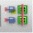

Generating a Virtual Hierarchy
For designs that have no hard or soft blocks available, the Generate All From Source command uses the schematic hierarchy to create a virtual hierarchy that entirely matches the schematic. To generate a virtual hierarchy:
-
In Virtuoso Layout Suite EXL, invoke the Design Planner toolbar.
The Design Planner toolbar displays. -
Click the Generate All From Source (
) toolbar button.
The Generate Layout form displays with the Virtual Hierarchy option in the Design Planning group box selected. - Choose the required virtual hierarchy generation options.
-
Click OK.
The Design Planning and Analysis tool generates the layout components from scratch for the selected schematic source.
For the schematic instances that have no soft or hard block, the Design Planning and Analysis tool generates a virtual hierarchy, which can be accessed using the Navigator assistant. For more information, see Virtual Hierarchy Data Sets in Navigator Assistant.
For schematics that only have pins, no instances or physical binding, or for symbols in the schematic hierarchical design that have a missing schematic, the Design Planning and Analysis tool generates soft blocks when the virtual hierarchy is generated.
Any top-level virtual hierarchy blocks that have an ignore for generation attribute set on the instances do not have their soft blocks created in the virtual hierarchy.
Related Topics
Generating a Soft Block for a Virtual Hierarchy
Return to top